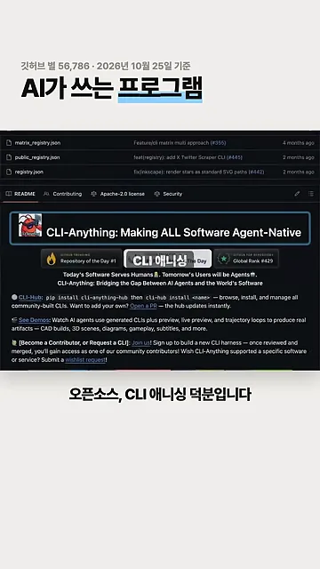
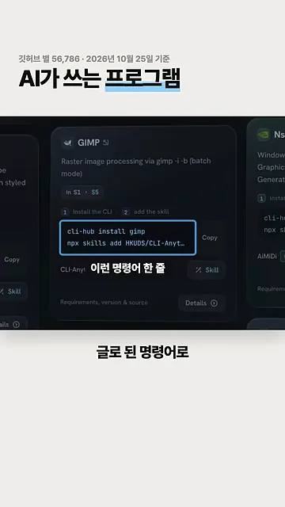
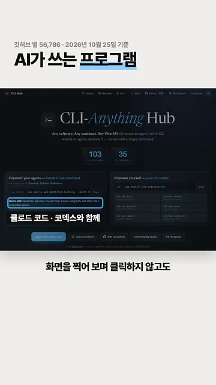
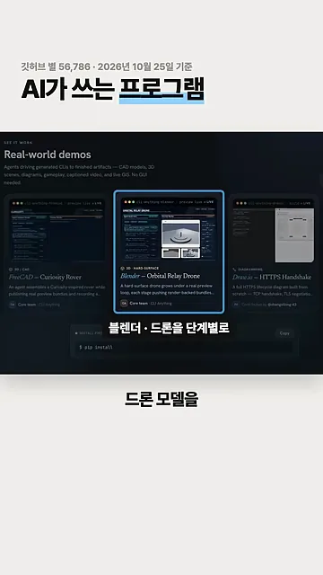
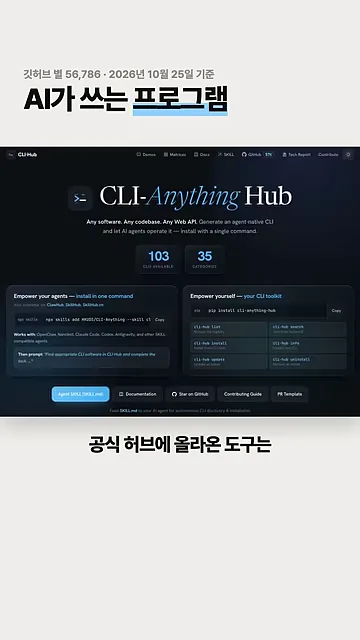
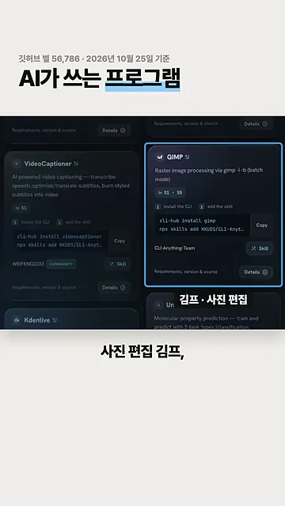
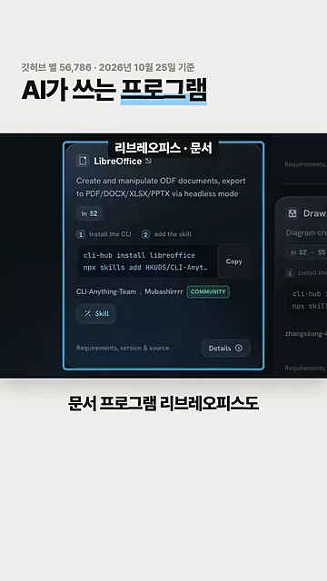

CLI-Anything이 하는 일
CLI(Command Line Interface)는 마우스로 버튼을 누르는 대신 글로 된 명령어로 프로그램을 다루는 방식이에요. 블렌더나 GIMP 같은 프로그램은 원래 사람이 화면을 보며 누르도록 만들어져 있어요. CLI-Anything은 이런 프로그램에 명령어 입구를 붙여 주는 오픈소스예요.
영상은 이 프로젝트의 깃허브 페이지부터 보여 줘요. 맨 위 제목이 'Making ALL Software Agent-Native', 곧 모든 소프트웨어를 에이전트가 바로 쓸 수 있게 만든다는 뜻이에요. 화면 맨 위에는 깃허브 별 56,786개(2026년 10월 25일 기준)라는 숫자가 붙어 있어요.

AI가 화면을 안 봐도 되는 이유
지금까지 AI가 이런 프로그램을 쓰려면 화면을 캡처해서 보고, 어디를 누를지 정한 뒤 클릭해야 했어요. 명령어 입구가 생기면 이 과정이 통째로 빠져요. AI는 명령어를 보내고 결과만 받으면 돼요. 영상이 말로 짚은 두 길을 나란히 그리면 이래요.
설치는 두 줄
영상은 GIMP 카드를 예로 들어 '이런 명령어 한 줄'을 보여 줘요. 파란 테두리 안에 두 줄이 있어요. 윗줄 cli-hub install gimp는 GIMP용 명령어 도구를 깔고, 아랫줄 npx skills add HKUDS/CLI-Anything…는 AI에게 그 도구를 쓰는 법을 스킬로 알려 줘요.

허브 첫 화면에서 영상이 파랗게 짚은 줄은 'Works with OpenClaw, Nanobot, Claude Code, Codex, Antigravity…'예요. 클로드 코드나 코덱스 같은 AI 코딩 도구에 그대로 붙여 쓸 수 있다는 말이에요.

공식 시연과 허브에 올라온 프로그램
공식 시연에서는 AI가 3D 프로그램 블렌더로 드론 모델을 만들어요. 화면 가운데 창 제목이 cli-anything-blender · preview live예요. 왼쪽에는 AI가 지금까지 한 작업 기록이, 오른쪽에는 그 결과를 렌더링한 미리보기가 떠 있어요.

이 시연은 깃허브의 'Real-world demos' 묶음 중 하나예요. 영상이 고른 가운데 카드가 블렌더 드론이고, 양옆에 FreeCAD로 만든 탐사 로버, Draw.io로 그린 다이어그램 시연이 나란히 있어요.

허브에 올라온 프로그램들
공식 허브 첫 화면 가운데에 숫자 두 개가 있어요. 왼쪽 103이 올라온 도구 수, 오른쪽 35가 분류 수예요. 영상은 이 가운데 일상에서 많이 쓰는 프로그램 몇 개를 골라 보여 줘요.

다음 화면은 허브의 도구 카드 목록이에요. 파랗게 강조한 카드가 사진 편집 프로그램 GIMP이고, 왼쪽에는 자막을 만드는 VideoCaptioner, 아래에는 영상 편집 프로그램 Kdenlive 카드가 보여요.

마지막으로 문서 프로그램 리브레오피스 카드예요. 설명에는 ODF(Open Document Format) 문서를 만들고 고치며, 화면 없이 PDF·DOCX(Office Open XML Document)·XLSX(Office Open XML Spreadsheet)·PPTX(Office Open XML Presentation)로 내보낸다고 적혀 있어요.

libreoffice로 바뀌어요.
영상 00:34에서 보기
영상이 짚은 프로그램을 표로 묶으면 이래요.
| 프로그램 | 하는 일 | 영상에서 나온 곳 |
|---|---|---|
| 블렌더 | 3D 모델링 | 공식 시연 (드론 모델) |
| GIMP | 사진 편집 | 허브 카드 |
| Kdenlive | 영상 편집 | 허브 카드 |
| 리브레오피스 | 문서 | 허브 카드 |
모두 무료 오픈소스이고, 도구마다 명령어 한 줄로 설치해요. 영상은 손으로 반복하던 프로그램 작업 하나를 골라 AI에게 말로 맡겨 보라는 말로 끝나요.